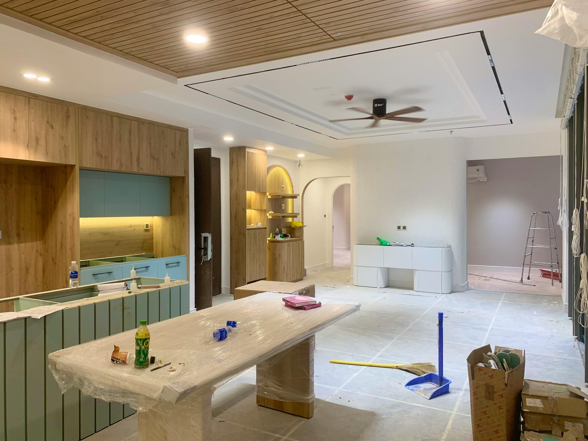

Carpenters for Housing Reform Victoria
Industry-led reform for renovation carpentry in Victoria — supporting builders, recognising trade experience, and improving housing delivery while builders remain responsible for new homes and major construction.
Supporting builders. Recognising carpenters. Strengthening housing delivery.
This initiative is focused on practical reform that maintains standards, protects consumers, and unlocks renovation capacity across Victoria.
Victorian Trades Supporting Reform
1
Support is growing among experienced Victorian carpenters and renovation trades.
Updated manually as support grows.

A practical reform idea built from real renovation experience in Victoria.
Experienced carpenters already manage renovation works, coordinate licensed trades, and deliver outcomes for clients every day. This initiative explores how the licensing system could better recognise that reality while keeping builders responsible for new homes and major construction.
Our Goal
Explore a Registered Residential Carpenter pathway that supports builders, recognises experienced carpenters, and improves housing delivery in Victoria.
Why It Makes Sense
Many experienced carpenters already coordinate renovation work, manage licensed trades, and deliver defined residential works, but the current system does not provide a clear pathway for formal responsibility.
Builders remain responsible for new homes, framing, extensions, and major structural construction, while a renovation-focused pathway could recognise experienced carpenters already operating in this space across Victoria.
Housing Impact
A renovation-focused pathway could help smaller residential projects move more efficiently while maintaining strong standards, approvals, and consumer protections.
Current Industry Reality
Across Victoria, many experienced carpenters already coordinate renovation projects, manage trades such as plumbers and electricians, and oversee day-to-day site work.
Despite this, the current licensing structure does not provide a clear pathway for experienced carpenters to take formal responsibility for defined renovation projects.
Experience Requirements
Any Registered Residential Carpenter pathway should apply only to highly experienced tradespeople with significant on-site knowledge of residential construction and renovation work.
- Minimum of 10+ years experience in the carpentry trade
- Completion of a carpentry apprenticeship
- Demonstrated experience managing renovation projects
- Understanding of building compliance and permit requirements
- Coordination of licensed trades such as plumbing and electrical
Important Clarification
This initiative is not intended to replace licensed builders or alter the responsibilities of builders for new homes, structural construction, or multi-storey developments.
The focus is strictly on exploring a renovation-focused pathway for experienced carpenters within clearly defined limits.
Industry Voice
“Experienced carpenters already carry out much of this work across Victoria. A clearly defined pathway would recognise those skills while maintaining standards.” — Victorian Carpenter


Proposed Division of Responsibility
Clear boundary (important)
This pathway is renovation-focused. It is not intended to cover new-home framing or new home construction.
Builders remain responsible for:
- All new homes (site-built or factory-built)
- All new-home framing and structural builds
- Extensions and major structural alterations
- Multi-storey builds, complex projects, residential developments
Registered Residential Carpenters could lead (renovation-focused):
- Bathrooms, laundries, kitchens (renovation coordination)
- Window and door upgrades / replacement
- Internal fit-off carpentry (doors, trim, hardware, finish carpentry)
- Decks / pergolas / verandas (where applicable)
- Small granny flats / studios up to 30 m² (single storey)
- Repair / rectification carpentry works within defined limits
Plumbing/electrical by licensed trades. Engineering sign-off where required. Approvals obtained where required. Clear scope and limits to manage risk and protect consumers.
Founder
Founded by Daniel Sonsie, Victorian Carpenter. This initiative welcomes constructive input from carpenters, builders, regulators, and industry organisations across Victoria.
Support the Reform
Carpenters for Housing Reform Victoria is inviting constructive support and feedback from experienced carpenters, builders, and other industry professionals across the state.
Join the initiative
If you support exploring a renovation-focused pathway for experienced carpenters in Victoria, use the button below to open the support form.
Contact
Email: admin@sonsiecarpentry.com